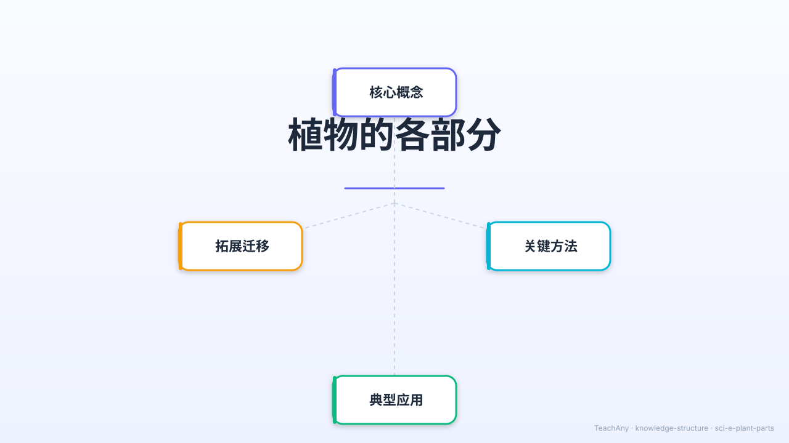

你仔细看过一株植物吗？根、茎、叶、花、果实、种子——
每个部分都有自己的重要工作！一起来探索植物的奥秘吧！

对应 2022 课标 · 小学科学 G1 · 生命科学领域
说出植物的根、茎、叶、花、果实、种子六个部分，并在植物图片中找到它们
描述每个部分的主要功能，理解"根吸水、茎输送、叶制造食物"等基础知识
通过胡萝卜和普通根、仙人掌茎和普通茎的对比，理解植物的多样性
了解种子到植株的生长过程，理解植物繁殖的基本方式
用 ABT 叙事结构开始今天的探索
植物会生长，需要阳光和水。花园里的花、树上的苹果、泥土里的胡萝卜，都是植物的一部分。
为什么胡萝卜长在土里，而苹果长在树上？植物的每个部分是不是都有它特别的任务？
认识植物的 六个部分：根、茎、叶、花、果实、种子，探索它们各自的重要本领！
5个场景 · 22秒 · 涵盖植物生长、六大部分介绍、功能展示和总结
每个部分都有独特的功能，共同维持植物的生命
点击植物图上的不同区域，探索每个部分的名称和功能！
👆 点击植物图上的高亮区域，识别各个部分。点击后显示名称和功能说明。
植物因环境不同，同一部分也会发展出不同的形态来适应生存
将左边的植物部分名称拖拽到下方对应的图标位置上
📦 从下方标签栏拖动名称，放到对应的植物部分图标上
每题只有一个正确答案，选完后查看分析哦！
完成各个学习任务，解锁专属徽章！
植物的六个部分各司其职，共同让植物健康生长！
吸收水分矿物质
固定在土壤中
输送水分营养
支撑植株生长
光合作用
制造食物
吸引传粉昆虫
发育成果实
包裹保护种子
由花发育而来
萌发成新植物
繁殖后代